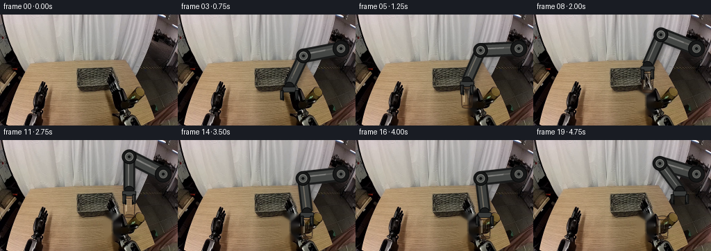
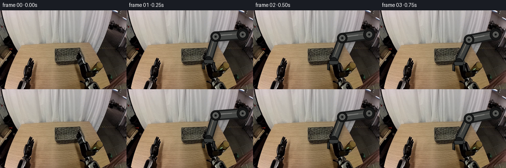
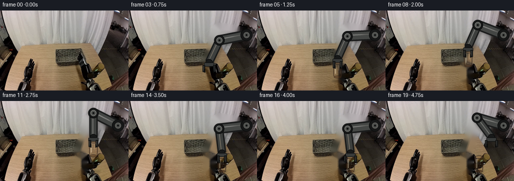
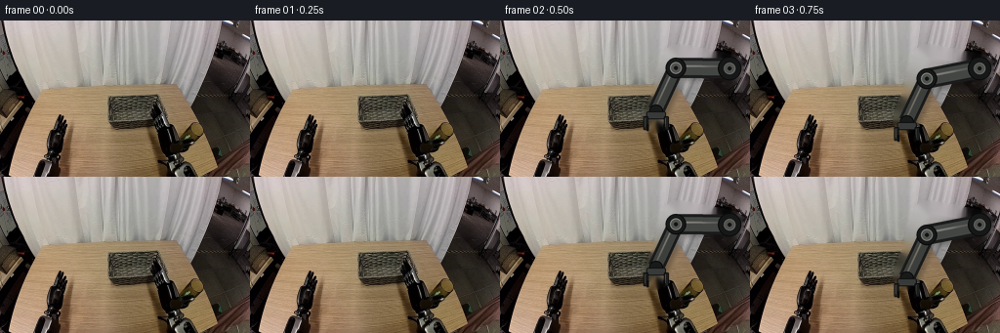

CODING AGENTS AS PIXEL WORLD MODELS
traex/GPT-5.6-Sol · common50_0036
点击播放 · 原生 RGB 像素
逐轮保存的候选
回放视频、检查图与代码变化。
每份候选均可单独播放。实际图片检查记录在下方工具轨迹中。
候选 01播放与检查图
点击播放 · 原生 RGB 像素


展开代码变化
--- 上一保存版本
+++ 本次保存版本
@@ -0,0 +1,183 @@
+from pathlib import Path
+import math
+import numpy as np
+import cv2
+from PIL import Image, ImageDraw, ImageFilter
+import artifact_io
+
+CASE_DIR = Path(__file__).resolve().parent
+W,H,S = 256,160,4
+
+
+def smoothstep(x):
+ x=max(0.0,min(1.0,float(x)))
+ return x*x*(3-2*x)
+
+def mix(a,b,t):
+ t=smoothstep(t)
+ return a+(b-a)*t
+
+def rgba_layer():
+ return Image.new('RGBA',(W*S,H*S),(0,0,0,0))
+
+def scpt(p): return tuple(int(round(v*S)) for v in p)
+
+def line(draw, pts, fill, width):
+ draw.line([scpt(p) for p in pts], fill=fill, width=max(1,int(width*S)), joint='curve')
+
+def ellipse(draw, box, fill, outline=None, width=1):
+ b=tuple(int(round(v*S)) for v in box)
+ draw.ellipse(b,fill=fill,outline=outline,width=max(1,int(width*S)))
+
+def polygon(draw, pts, fill): draw.polygon([scpt(p) for p in pts],fill=fill)
+
+def rounded(draw, box, radius, fill, outline=None, width=1):
+ b=tuple(int(round(v*S)) for v in box)
+ draw.rounded_rectangle(b,radius=int(radius*S),fill=fill,outline=outline,width=max(1,int(width*S)))
+
+def composite(base, layer):
+ lay=layer.resize((W,H),Image.Resampling.LANCZOS)
+ return np.asarray(Image.alpha_composite(Image.fromarray(base).convert('RGBA'),lay).convert('RGB'),dtype=np.uint8)
+
+
+def ik_elbow(anchor, target, l1=55.0, l2=48.0):
+ ax,ay=anchor; tx,ty=target
+ vx,vy=tx-ax,ty-ay
+ d=math.hypot(vx,vy)
+ d=max(abs(l1-l2)+.01,min(l1+l2-.01,d))
+ ux,uy=vx/(math.hypot(vx,vy)+1e-9),vy/(math.hypot(vx,vy)+1e-9)
+ a=(l1*l1-l2*l2+d*d)/(2*d)
+ hh=max(0,l1*l1-a*a)**.5
+ # Lower/forward elbow branch: natural motion for the right-mounted arm.
+ px,py=ax+a*ux,ay+a*uy
+ return (px-hh*uy, py+hh*ux)
+
+
+def draw_shadow(frame, cx, base_y, airborne):
+ # The object shadow remains on the table while the glass is in the air.
+ layer=rgba_layer(); d=ImageDraw.Draw(layer,'RGBA')
+ widen=1.0+0.45*airborne
+ alpha=int(70*(1-.42*airborne))
+ ellipse(d, (cx-10*widen,141-2.3*widen,cx+10*widen,141+2.3*widen), (12,8,5,alpha))
+ layer=layer.filter(ImageFilter.GaussianBlur(1.3*S))
+ return composite(frame,layer)
+
+
+def draw_glass(frame,cx,base_y):
+ """Small transparent brown cylindrical tumbler, with a rigid constant silhouette."""
+ top=base_y-31.0; hw=8.2
+ layer=rgba_layer(); d=ImageDraw.Draw(layer,'RGBA')
+ # transmitted amber tint, darker toward the sides and lower rim
+ for j in range(25):
+ yy=top+4+j
+ a=int(22+18*j/24)
+ col=(112,67,31,a)
+ polygon(d,[(cx-hw+1,yy),(cx+hw-1,yy),(cx+hw-.2,yy+1.2),(cx-hw+.2,yy+1.2)],col)
+ # glass walls and warm lower meniscus
+ line(d,[(cx-hw,top+2),(cx-hw+.8,base_y-3)],(57,39,27,205),1.25)
+ line(d,[(cx+hw,top+2),(cx+hw-.8,base_y-3)],(48,34,25,210),1.25)
+ line(d,[(cx-hw+2,top+5),(cx-hw+2.5,base_y-5)],(230,198,154,105),.85)
+ line(d,[(cx+hw-2.6,top+5),(cx+hw-3.1,base_y-8)],(166,119,69,100),.65)
+ ellipse(d,(cx-hw,top-2.0,cx+hw,top+4.2),(76,49,31,100),(46,35,29,225),1.1)
+ ellipse(d,(cx-hw+2,top-.5,cx+hw-2,top+2.7),(145,101,57,75),(205,167,118,125),.55)
+ ellipse(d,(cx-hw+.8,base_y-4,cx+hw-.8,base_y+1.2),(82,48,24,115),(51,35,25,215),1.0)
+ # narrow specular streak makes the transparent cylinder legible
+ rounded(d,(cx-4.9,top+5,cx-3.3,base_y-8),.7,(240,220,187,115))
+ rounded(d,(cx+2.3,top+7,cx+3.0,top+17),.3,(233,204,162,70))
+ return composite(frame,layer)
+
+
+def draw_arm(frame,wrist,grip_open):
+ anchor=(235.0,49.0)
+ elbow=ik_elbow(anchor,wrist)
+ # A shadow just under the distal forearm integrates it with the original right-side robot.
+ sh=rgba_layer(); sd=ImageDraw.Draw(sh,'RGBA')
+ line(sd,[(anchor[0]+2,anchor[1]+3),(elbow[0]+2,elbow[1]+4),(wrist[0]+2,wrist[1]+4)],(0,0,0,55),20)
+ sh=sh.filter(ImageFilter.GaussianBlur(2.2*S)); frame=composite(frame,sh)
+
+ layer=rgba_layer(); d=ImageDraw.Draw(layer,'RGBA')
+ # rigid graphite two-link manipulator, matching the dark arm already entering at upper right
+ line(d,[anchor,elbow],(26,27,27,255),21)
+ line(d,[anchor,elbow],(68,70,68,255),15)
+ line(d,[(anchor[0]-1,anchor[1]-2),(elbow[0]-1,elbow[1]-2)],(119,121,116,175),2.3)
+ line(d,[elbow,wrist],(24,25,25,255),17)
+ line(d,[elbow,wrist],(61,63,61,255),11.5)
+ line(d,[(elbow[0]-1,elbow[1]-2),(wrist[0]-1,wrist[1]-2)],(110,112,107,165),1.8)
+ for p,r in [(anchor,12),(elbow,10.5)]:
+ ellipse(d,(p[0]-r,p[1]-r,p[0]+r,p[1]+r),(22,23,23,255),(8,9,9,255),1.2)
+ ellipse(d,(p[0]-6,p[1]-6,p[0]+6,p[1]+6),(79,81,78,255),(129,130,124,180),1)
+ ellipse(d,(p[0]-2,p[1]-2,p[0]+2,p[1]+2),(18,19,19,255))
+ # wrist rotary collar and rectangular palm
+ ellipse(d,(wrist[0]-7,wrist[1]-6,wrist[0]+7,wrist[1]+7),(24,25,25,255),(7,8,8,255),1)
+ rounded(d,(wrist[0]-10,wrist[1]+1,wrist[0]+10,wrist[1]+9),2.0,(56,58,57,255),(14,15,15,255),1)
+ # parallel right gripper. Opening is explicit and then closes around the rigid glass.
+ sep=10.5 if grip_open else 7.0
+ for side in (-1,1):
+ x=wrist[0]+side*sep
+ rounded(d,(x-2.5,wrist[1]+6,x+2.5,wrist[1]+20),1.4,(29,30,30,255),(6,7,7,255),.9)
+ # inward rubber pads
+ if side<0: box=(x+1.0,wrist[1]+14,x+3.0,wrist[1]+21)
+ else: box=(x-3.0,wrist[1]+14,x-1.0,wrist[1]+21)
+ rounded(d,box,.7,(9,10,10,255))
+ line(d,[(x-1,wrist[1]+8),(x-1,wrist[1]+17)],(123,125,120,150),.65)
+ return composite(frame,layer)
+
+
+def states(i):
+ # Returns glass center/base, wrist, gripper opening, whether glass has left the table.
+ sx,sbase=160.5,142.0
+ if i<=1:
+ return sx,sbase,(166.0,99.0),True,False
+ if i<=3:
+ t=(i-1)/2; wx=mix(166,sx,t); wy=mix(99,103,t)
+ return sx,sbase,(wx,wy),True,False
+ if i==4:
+ return sx,sbase,(sx,103.0),False,False
+ if i<=7: # lift vertically
+ t=(i-4)/3; by=mix(sbase,112,t)
+ return sx,by,(sx,by-39),False,True
+ if i<=11: # translate above and to the right of basket
+ t=(i-7)/4; cx=mix(sx,186.0,t); by=111+1.5*math.sin(math.pi*t)
+ return cx,by,(cx,by-39),False,True
+ if i<=14: # lower to table
+ t=(i-11)/3; by=mix(111,142,t)
+ return 186.0,by,(186.0,by-39),False,True
+ if i==15:
+ return 186.0,142.0,(186.0,103.0),False,True
+ if i==16: # release
+ return 186.0,142.0,(186.0,103.0),True,True
+ if i==17:
+ return 186.0,142.0,(194.0,94.0),True,True
+ if i==18:
+ return 186.0,142.0,(202.0,83.0),True,True
+ return 186.0,142.0,(211.0,72.0),True,True
+
+
+def main():
+ original=np.asarray(Image.open(CASE_DIR/'first_frame.png').convert('RGB'),dtype=np.uint8)
+ assert original.shape==(H,W,3)
+ # Clean plate for the small initial glass/gripper footprint once it is lifted.
+ mask=np.zeros((H,W),np.uint8)
+ cv2.ellipse(mask,(161,125),(13,22),0,0,360,255,-1)
+ cv2.rectangle(mask,(150,106),(174,145),255,-1)
+ # only this compact tabletop patch is reconstructed; the complete workspace stays camera-fixed
+ clean=cv2.inpaint(original,mask,4,cv2.INPAINT_TELEA)
+ frames=[original.copy()]
+ for i in range(1,20):
+ cx,by,wrist,opened,lifted=states(i)
+ if i<=4:
+ frame=original.copy()
+ else:
+ frame=clean.copy()
+ airborne=max(0,min(1,(142-by)/30))
+ frame=draw_shadow(frame,cx,by,airborne)
+ frame=draw_glass(frame,cx,by)
+ # Arm is drawn last: fingers correctly occlude the rim while grasping.
+ frame=draw_arm(frame,wrist,opened)
+ frames.append(frame)
+ arr=np.stack(frames).astype(np.uint8)
+ assert np.array_equal(arr[0],original)
+ artifact_io.save(arr,CASE_DIR)
+
+if __name__=='__main__':
+ main()
候选 02播放与检查图
点击播放 · 原生 RGB 像素


展开代码变化
--- 上一保存版本
+++ 本次保存版本
@@ -127,9 +127,9 @@
# Returns glass center/base, wrist, gripper opening, whether glass has left the table.
sx,sbase=160.5,142.0
if i<=1:
- return sx,sbase,(166.0,99.0),True,False
+ return sx,sbase,(159.0,81.0),True,False
if i<=3:
- t=(i-1)/2; wx=mix(166,sx,t); wy=mix(99,103,t)
+ t=(i-1)/2; wx=mix(159,sx,t); wy=mix(81,103,t)
return sx,sbase,(wx,wy),True,False
if i==4:
return sx,sbase,(sx,103.0),False,False
@@ -156,17 +156,28 @@
def main():
original=np.asarray(Image.open(CASE_DIR/'first_frame.png').convert('RGB'),dtype=np.uint8)
assert original.shape==(H,W,3)
- # Clean plate for the small initial glass/gripper footprint once it is lifted.
- mask=np.zeros((H,W),np.uint8)
- cv2.ellipse(mask,(161,125),(13,22),0,0,360,255,-1)
- cv2.rectangle(mask,(150,106),(174,145),255,-1)
- # only this compact tabletop patch is reconstructed; the complete workspace stays camera-fixed
- clean=cv2.inpaint(original,mask,4,cv2.INPAINT_TELEA)
+ # Clean the original distal arm so its old pose cannot remain as a ghost behind the
+ # articulated replacement. The fixed right-side mount itself is redrawn in place.
+ arm_mask=np.zeros((H,W),np.uint8)
+ initial_wrist=(159.0,81.0)
+ initial_elbow=ik_elbow((235.0,49.0),initial_wrist)
+ cv2.line(arm_mask,(235,49),tuple(map(lambda z:int(round(z)),initial_elbow)),255,27,cv2.LINE_AA)
+ cv2.line(arm_mask,tuple(map(lambda z:int(round(z)),initial_elbow)),(159,102),255,24,cv2.LINE_AA)
+ clean_arm=cv2.inpaint(original,arm_mask,5,cv2.INPAINT_TELEA)
+ # A second clean plate also removes the glass once it has been picked up.
+ object_mask=np.zeros((H,W),np.uint8)
+ cv2.ellipse(object_mask,(161,125),(13,22),0,0,360,255,-1)
+ cv2.rectangle(object_mask,(150,106),(174,145),255,-1)
+ clean=cv2.inpaint(clean_arm,object_mask,4,cv2.INPAINT_TELEA)
frames=[original.copy()]
for i in range(1,20):
cx,by,wrist,opened,lifted=states(i)
+ if i==1:
+ # A brief stable hold establishes the fixed camera and preserves a gentle start.
+ frames.append(original.copy())
+ continue
if i<=4:
- frame=original.copy()
+ frame=clean_arm.copy()
else:
frame=clean.copy()
airborne=max(0,min(1,(142-by)/30))
可观测工具轨迹
实际执行的命令与返回图片。
命令 1exit 0
/bin/bash -lc "cat GENERATION_RULES.md && printf '\\n---PROMPT---\\n' && cat prompt.txt"
命令 2exit 127
/bin/bash -lc "find . -maxdepth 2 -type f -printf '%p\\n' | sort && printf '\\n--- image metadata ---\\n' && file first_frame.png"
命令 3exit 0
/bin/bash -lc "cat task_spec.json && sed -n '1,240p' artifact_io.py"
命令 4exit 0
/bin/bash -lc "python3 - <<'PY'
from PIL import Image
import numpy as np
im=np.array(Image.open('first_frame.png').convert('RGB'))
print(im.shape,im.dtype,im.min(),im.max(), im.mean((0,1)))
# coarse cells means 16x10
for y in range(0,160,10):
row=[]
for x in range(0,256,16):
a=im[y:y+10,x:x+16].mean((0,1))
row.append('%02x%02x%02x'%tuple(a.astype(int)))
print(' '.join(row))
PY"命令 5exit 0
/bin/bash -lc "python3 - <<'PY'
try:
import cv2; print('cv2',cv2.__version__)
except Exception as e: print(e)
from PIL import Image
import numpy as np
im=np.array(Image.open('first_frame.png').convert('RGB'))
# grayscale and edge ascii 4x4 blocks
Y=(.299*im[:,:,0]+.587*im[:,:,1]+.114*im[:,:,2])
print('LUMA ascii (4x4 average):')
chars=' .:-=+*#%@'
for y in range(0,160,4):
print(''.join(chars[min(9,int(Y[y:y+4,x:x+4].mean()/256*10))] for x in range(0,256,4)))
print('\\ncolor category 4x4 (K dark, W neutral bright, b brown, g gray, R reddish):')
for y in range(0,160,4):
s=''
for x in range(0,256,4):
r,g,b=im[y:y+4,x:x+4].mean((0,1)); mx=max(r,g,b); mn=min(r,g,b)
if mx<35:c='X'
elif mx<65:c='K'
elif mx<100:c='k'
elif mx-mn<10 and mx<160:c='g'
elif mx-mn<15 and mx>=160:c='G'
elif r>g*1.12 and g>b*1.08:c='b'
elif r>b*1.12:c='t'
elif mx>190:c='W'
else:c='n'
s+=c
print(s)
PY"命令 6exit 0
/bin/bash -lc "python3 - <<'PY'
import cv2, numpy as np
from PIL import Image
im=np.array(Image.open('first_frame.png').convert('RGB')); g=cv2.cvtColor(im,cv2.COLOR_RGB2GRAY)
for th1,th2 in [(30,60),(60,120),(100,200)]:
e=cv2.Canny(g,th1,th2)
cs,_=cv2.findContours(e,cv2.RETR_LIST,cv2.CHAIN_APPROX_SIMPLE)
print('\\n',th1,th2)
for c in sorted(cs,key=cv2.contourArea,reverse=True)[:40]:
x,y,w,h=cv2.boundingRect(c); a=cv2.contourArea(c)
if a>4: print(round(a,1),(x,y,w,h))
# print 2x2 luma edges from y50
print('\\nEDGE ASCII y50+, 2x2 max canny')
e=cv2.Canny(g,40,100)
for y in range(50,160,2):
print(f'{y:03d} '+''.join('#' if e[y:y+2,x:x+2].max() else ' ' for x in range(0,256,2)))
PY"命令 7exit 0
/bin/bash -lc "python3 - <<'PY'
from PIL import Image
import numpy as np
im=np.array(Image.open('first_frame.png').convert('RGB'))
for y in range(0,160,5):
print('\\ny',y)
for x in range(0,256,8):
p=np.median(im[y:min(y+5,160),x:x+8],axis=(0,1)).astype(int)
print(f'{x:03}:{p[0]:02x}{p[1]:02x}{p[2]:02x}',end=' ')
print()
PY"命令 8exit 0
/bin/bash -lc "which chafa viu jp2 timg img2txt viu 2>/dev/null || true; python3 - <<'PY'
from PIL import Image
im=Image.open('first_frame.png')
# nearest upscale crops for optional artifacts
for name,box in [('left',(0,50,80,160)),('center',(90,60,180,160)),('right',(140,60,256,160))]:
im.crop(box).resize(((box[2]-box[0])*5,(box[3]-box[1])*5)).save(name+'.png')
PY
ls -lh *.png"命令 9exit 0
/bin/bash -lc "python3 - <<'PY'
from PIL import Image
import numpy as np, cv2
im=np.array(Image.open('first_frame.png').convert('RGB'))
# map local contrast edge and colors each 1 px
for box in [(100,65,180,150),(140,95,210,160),(0,50,80,160),(175,0,256,110)]:
x0,y0,x1,y1=box
print('\\nBOX',box)
for y in range(y0,y1):
s=''
for x in range(x0,x1):
r,g,b=im[y,x]; mx=max(r,g,b); mn=min(r,g,b); lum=(int(r)+int(g)+int(b))/3
if lum<12:c=' '
elif lum<30:c='X'
elif lum<50:c='K'
elif lum<75:c='k'
elif lum<100:c='d'
elif r>g*1.15 and g>b*1.08:c='B'
elif r>b*1.12:c='b'
elif mx-mn<12 and lum<130:c='g'
elif mx-mn<15:c='G'
elif lum<130:c='n'
elif lum<170:c='N'
else:c='.'
s+=c
print(s)
PY"命令 10exit 0
/bin/bash -lc "python3 - <<'PY'
from PIL import Image
import numpy as np
im=np.array(Image.open('first_frame.png').convert('RGB'))
# each 2x1 pixel classify to luma chars and show exact averaged RGB relevant
chars=' .:-=+*#%@'
for y in range(98,150):
s=''
for x in range(140,182):
r,g,b=im[y,x]; l=(int(r)+int(g)+int(b))/3
# brown uppercase if chroma
c=chars[min(9,int(l/256*10))]
if r>g*1.2 and r>b*1.4: c='B'
s+=c
print(f'{y:03} {s}')
print('edge bounds per row Canny')
import cv2
g=cv2.cvtColor(im,cv2.COLOR_RGB2GRAY); e=cv2.Canny(g,80,160)
for y in range(98,150):
print(y,[x for x in range(135,185) if e[y,x]])
PY"命令 11exit 0
/bin/bash -lc "python3 - <<'PY'
import cv2,numpy as np
from PIL import Image
im=np.array(Image.open('first_frame.png').convert('RGB')); g=cv2.cvtColor(im,cv2.COLOR_RGB2GRAY)
for t in [20,35,50,65,80,100]:
m=(g<t).astype('uint8')
n,lab,stats,cent=cv2.connectedComponentsWithStats(m,8)
print('\\nTH',t)
for i in np.argsort(stats[1:,4])[::-1][:20]+1:
x,y,w,h,a=stats[i];print(a,(x,y,w,h),tuple(np.round(cent[i],1)))
PY"命令 12exit 0
/bin/bash -lc "cat > generate.py <<'PY'
from pathlib import Path
import math
import numpy as np
import cv2
from PIL import Image, ImageDraw, ImageFilter
import artifact_io
CASE_DIR = Path(__file__).resolve().parent
W,H,S = 256,160,4
def smoothstep(x):
x=max(0.0,min(1.0,float(x)))
return x*x*(3-2*x)
def mix(a,b,t):
t=smoothstep(t)
return a+(b-a)*t
def rgba_layer():
return Image.new('RGBA',(W*S,H*S),(0,0,0,0))
def scpt(p): return tuple(int(round(v*S)) for v in p)
def line(draw, pts, fill, width):
draw.line([scpt(p) for p in pts], fill=fill, width=max(1,int(width*S)), joint='curve')
def ellipse(draw, box, fill, outline=None, width=1):
b=tuple(int(round(v*S)) for v in box)
draw.ellipse(b,fill=fill,outline=outline,width=max(1,int(width*S)))
def polygon(draw, pts, fill): draw.polygon([scpt(p) for p in pts],fill=fill)
def rounded(draw, box, radius, fill, outline=None, width=1):
b=tuple(int(round(v*S)) for v in box)
draw.rounded_rectangle(b,radius=int(radius*S),fill=fill,outline=outline,width=max(1,int(width*S)))
def composite(base, layer):
lay=layer.resize((W,H),Image.Resampling.LANCZOS)
return np.asarray(Image.alpha_composite(Image.fromarray(base).convert('RGBA'),lay).convert('RGB'),dtype=np.uint8)
def ik_elbow(anchor, target, l1=55.0, l2=48.0):
ax,ay=anchor; tx,ty=target
vx,vy=tx-ax,ty-ay
d=math.hypot(vx,vy)
d=max(abs(l1-l2)+.01,min(l1+l2-.01,d))
ux,uy=vx/(math.hypot(vx,vy)+1e-9),vy/(math.hypot(vx,vy)+1e-9)
a=(l1*l1-l2*l2+d*d)/(2*d)
hh=max(0,l1*l1-a*a)**.5
# Lower/forward elbow branch: natural motion for the right-mounted arm.
px,py=ax+a*ux,ay+a*uy
return (px-hh*uy, py+hh*ux)
def draw_shadow(frame, cx, base_y, airborne):
# The object shadow remains on the table while the glass is in the air.
layer=rgba_layer(); d=ImageDraw.Draw(layer,'RGBA')
widen=1.0+0.45*airborne
alpha=int(70*(1-.42*airborne))
ellipse(d, (cx-10*widen,141-2.3*widen,cx+10*widen,141+2.3*widen), (12,8,5,alpha))
layer=layer.filter(ImageFilter.GaussianBlur(1.3*S))
return composite(frame,layer)
def draw_glass(frame,cx,base_y):
\"\"\"Small transparent brown cylindrical tumbler, with a rigid constant silhouette.\"\"\"
top=base_y-31.0; hw=8.2
layer=rgba_layer(); d=ImageDraw.Draw(layer,'RGBA')
# transmitted amber tint, darker toward the sides and lower rim
for j in range(25):
yy=top+4+j
a=int(22+18*j/24)
col=(112,67,31,a)
polygon(d,[(cx-hw+1,yy),(cx+hw-1,yy),(cx+hw-.2,yy+1.2),(cx-hw+.2,yy+1.2)],col)
# glass walls and warm lower meniscus
line(d,[(cx-hw,top+2),(cx-hw+.8,base_y-3)],(57,39,27,205),1.25)
line(d,[(cx+hw,top+2),(cx+hw-.8,base_y-3)],(48,34,25,210),1.25)
line(d,[(cx-hw+2,top+5),(cx-hw+2.5,base_y-5)],(230,198,154,105),.85)
line(d,[(cx+hw-2.6,top+5),(cx+hw-3.1,base_y-8)],(166,119,69,100),.65)
ellipse(d,(cx-hw,top-2.0,cx+hw,top+4.2),(76,49,31,100),(46,35,29,225),1.1)
ellipse(d,(cx-hw+2,top-.5,cx+hw-2,top+2.7),(145,101,57,75),(205,167,118,125),.55)
ellipse(d,(cx-hw+.8,base_y-4,cx+hw-.8,base_y+1.2),(82,48,24,115),(51,35,25,215),1.0)
# narrow specular streak makes the transparent cylinder legible
rounded(d,(cx-4.9,top+5,cx-3.3,base_y-8),.7,(240,220,187,115))
rounded(d,(cx+2.3,top+7,cx+3.0,top+17),.3,(233,204,162,70))
return composite(frame,layer)
def draw_arm(frame,wrist,grip_open):
anchor=(235.0,49.0)
elbow=ik_elbow(anchor,wrist)
# A shadow just under the distal forearm integrates it with the original right-side robot.
sh=rgba_layer(); sd=ImageDraw.Draw(sh,'RGBA')
line(sd,[(anchor[0]+2,anchor[1]+3),(elbow[0]+2,elbow[1]+4),(wrist[0]+2,wrist[1]+4)],(0,0,0,55),20)
sh=sh.filter(ImageFilter.GaussianBlur(2.2*S)); frame=composite(frame,sh)
layer=rgba_layer(); d=ImageDraw.Draw(layer,'RGBA')
# rigid graphite two-link manipulator, matching the dark arm already entering at upper right
line(d,[anchor,elbow],(26,27,27,255),21)
line(d,[anchor,elbow],(68,70,68,255),15)
line(d,[(anchor[0]-1,anchor[1]-2),(elbow[0]-1,elbow[1]-2)],(119,121,116,175),2.3)
line(d,[elbow,wrist],(24,25,25,255),17)
line(d,[elbow,wrist],(61,63,61,255),11.5)
line(d,[(elbow[0]-1,elbow[1]-2),(wrist[0]-1,wrist[1]-2)],(110,112,107,165),1.8)
for p,r in [(anchor,12),(elbow,10.5)]:
ellipse(d,(p[0]-r,p[1]-r,p[0]+r,p[1]+r),(22,23,23,255),(8,9,9,255),1.2)
ellipse(d,(p[0]-6,p[1]-6,p[0]+6,p[1]+6),(79,81,78,255),(129,130,124,180),1)
ellipse(d,(p[0]-2,p[1]-2,p[0]+2,p[1]+2),(18,19,19,255))
# wrist rotary collar and rectangular palm
ellipse(d,(wrist[0]-7,wrist[1]-6,wrist[0]+7,wrist[1]+7),(24,25,25,255),(7,8,8,255),1)
rounded(d,(wrist[0]-10,wrist[1]+1,wrist[0]+10,wrist[1]+9),2.0,(56,58,57,255),(14,15,15,255),1)
# parallel right gripper. Opening is explicit and then closes around the rigid glass.
sep=10.5 if grip_open else 7.0
for side in (-1,1):
x=wrist[0]+side*sep
rounded(d,(x-2.5,wrist[1]+6,x+2.5,wrist[1]+20),1.4,(29,30,30,255),(6,7,7,255),.9)
# inward rubber pads
if side<0: box=(x+1.0,wrist[1]+14,x+3.0,wrist[1]+21)
else: box=(x-3.0,wrist[1]+14,x-1.0,wrist[1]+21)
rounded(d,box,.7,(9,10,10,255))
line(d,[(x-1,wrist[1]+8),(x-1,wrist[1]+17)],(123,125,120,150),.65)
return composite(frame,layer)
def states(i):
# Returns glass center/base, wrist, gripper opening, whether glass has left the table.
sx,sbase=160.5,142.0
if i<=1:
return sx,sbase,(166.0,99.0),True,False
if i<=3:
t=(i-1)/2; wx=mix(166,sx,t); wy=mix(99,103,t)
return sx,sbase,(wx,wy),True,False
if i==4:
return sx,sbase,(sx,103.0),False,False
if i<=7: # lift vertically
t=(i-4)/3; by=mix(sbase,112,t)
return sx,by,(sx,by-39),False,True
if i<=11: # translate above and to the right of basket
t=(i-7)/4; cx=mix(sx,186.0,t); by=111+1.5*math.sin(math.pi*t)
return cx,by,(cx,by-39),False,True
if i<=14: # lower to table
t=(i-11)/3; by=mix(111,142,t)
return 186.0,by,(186.0,by-39),False,True
if i==15:
return 186.0,142.0,(186.0,103.0),False,True
if i==16: # release
return 186.0,142.0,(186.0,103.0),True,True
if i==17:
return 186.0,142.0,(194.0,94.0),True,True
if i==18:
return 186.0,142.0,(202.0,83.0),True,True
return 186.0,142.0,(211.0,72.0),True,True
def main():
original=np.asarray(Image.open(CASE_DIR/'first_frame.png').convert('RGB'),dtype=np.uint8)
assert original.shape==(H,W,3)
# Clean plate for the small initial glass/gripper footprint once it is lifted.
mask=np.zeros((H,W),np.uint8)
cv2.ellipse(mask,(161,125),(13,22),0,0,360,255,-1)
cv2.rectangle(mask,(150,106),(174,145),255,-1)
# only this compact tabletop patch is reconstructed; the complete workspace stays camera-fixed
clean=cv2.inpaint(original,mask,4,cv2.INPAINT_TELEA)
frames=[original.copy()]
for i in range(1,20):
cx,by,wrist,opened,lifted=states(i)
if i<=4:
frame=original.copy()
else:
frame=clean.copy()
airborne=max(0,min(1,(142-by)/30))
frame=draw_shadow(frame,cx,by,airborne)
frame=draw_glass(frame,cx,by)
# Arm is drawn last: fingers correctly occlude the rim while grasping.
frame=draw_arm(frame,wrist,opened)
frames.append(frame)
arr=np.stack(frames).astype(np.uint8)
assert np.array_equal(arr[0],original)
artifact_io.save(arr,CASE_DIR)
if __name__=='__main__':
main()
PY
python3 generate.py
python3 - <<'PY'
import numpy as np
from PIL import Image
x=np.load('pixels.npz')['pixels']; print(x.shape,x.dtype)
a=np.array(Image.open('frames/00.png')); b=np.array(Image.open('first_frame.png')); print('frame0 exact',np.array_equal(a,b),'changed px',[(i,int(np.any(np.array(Image.open(f'frames/{i:02d}.png'))"'!=b,axis=2).sum())) for i in [1,4,5,10,15,19]])
PY
ls -lh inspection.png transition_check.png pixels.npz index.html'命令 13exit 0
/bin/bash -lc "python3 - <<'PY' import sys;sys.path.insert(0,'.');import generate for i in range(20): print(i,generate.states(i), 'elbow',generate.ik_elbow((235,49),generate.states(i)[2])) PY"
命令 14exit 0
/bin/bash -lc "python3 generate.py && python3 - <<'PY'
from PIL import Image
import numpy as np
b=np.array(Image.open('first_frame.png'))
for i in range(20):
a=np.array(Image.open(f'frames/{i:02d}.png'))
print(i, np.any(a"'!=b,2).sum(), round(abs(a.astype(float)-b).mean(),2))
PY'保存候选 2 份；完成命令 14 次；可验证图片返回 0 张。原始 API 响应与完整日志保留在本地。